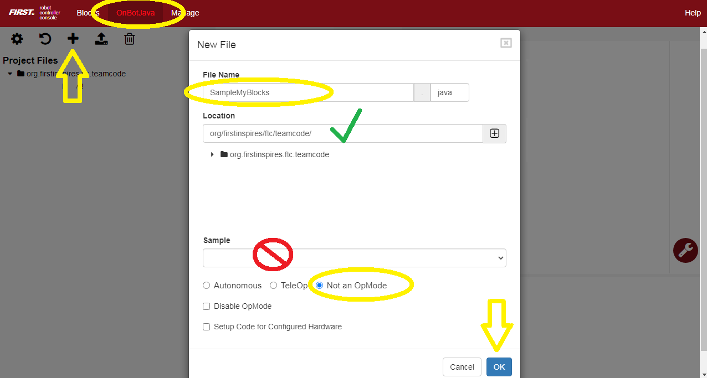
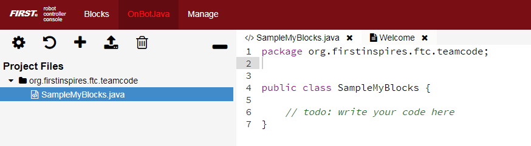
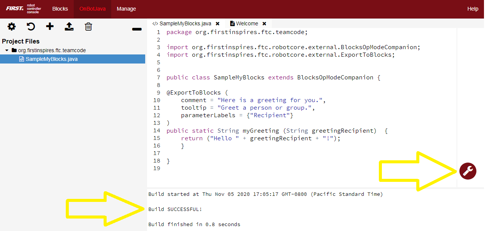
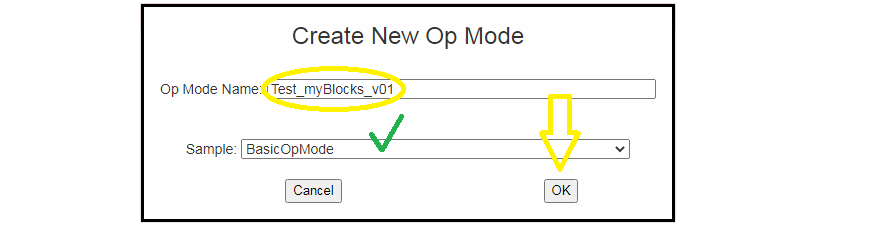
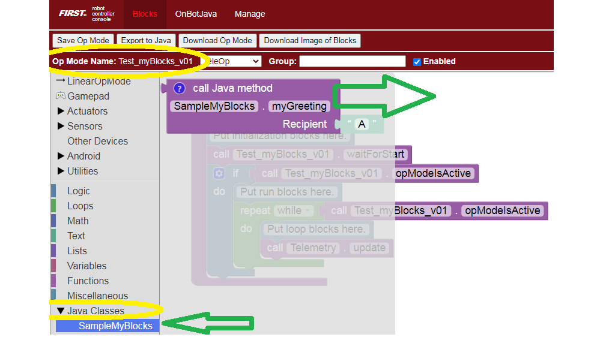
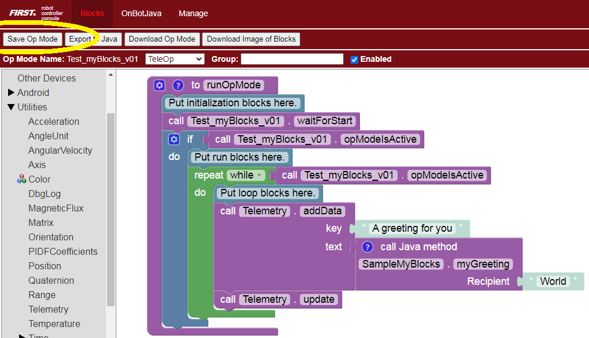
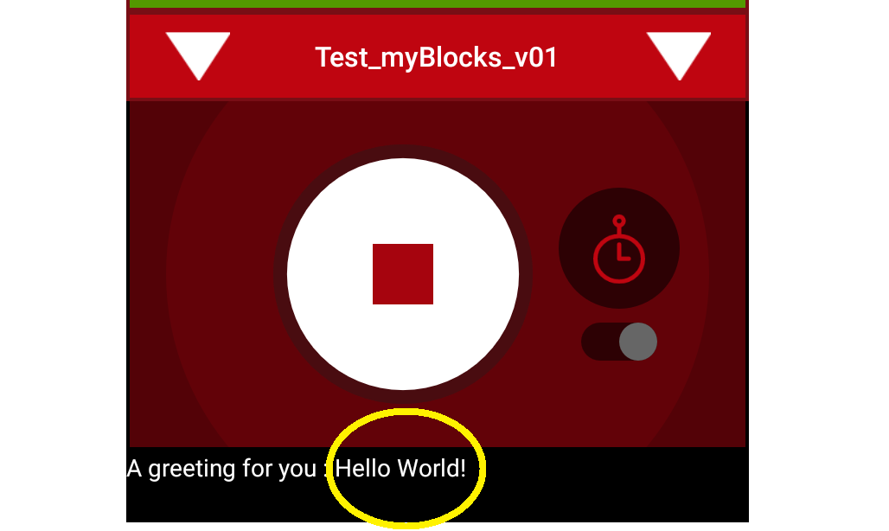

Simple Example: create myGreeting
Start with a simple myBlock that creates a greeting “Hello World” (of course!).
Open a Chrome browser connected via Wi-Fi to a Control Hub or RC phone. Go to the address http://192.168.43.1:8080 (CH) or http://192.168.49.1:8080 (RC), and click the OnBot Java tab.
Note
A computer can usually connect to only one Wi-Fi network at a time. To follow this tutorial while programming please use the PDF version of FTC Docs. If you need internet and programming together, connect an Ethernet cable to an internet router or try adding a USB Wi-Fi dongle.
Click the large plus-sign icon to open a new file; call it SampleMyBlocks.java. Use the default ‘teamcode’ folder location. Don’t choose a Sample OpMode, and use the default setting ‘Not an OpMode’. Click OK.
In the work area you see a simple/empty Java program.
Line 1 shows the default storage folder ‘teamcode’, and Line 4 shows the
class name, same as the filename. It’s public so other classes
can access it. Notice the left curly brace at Line 4 and right
curly brace at Line 7. Place all your code between these curly braces.
The two forward-slash marks // indicate a comment line, all ignored by the Java software. Good programmers use lots of comments, to communicate with your teammates and with your future self! You will not remember every little detail of your programs… and will thank yourself later for commenting heavily!
Programming note: A class describes methods (actions) and fields (properties) that can be used by objects (examples or instances of the class). A class called ‘dogs’ might contain methods ‘run’ and ‘sleep’, and fields ‘friendliness’ and ‘appetite’. Your pets Spot and Rover would be objects or instances of the ‘dogs’ class.
After the class name, type extends BlocksOpModeCompanion. This
declares your new class as a subclass or child of a higher
superclass or parent. The parent class BlocksOpModeCompanion
contains useful tools to be inherited by your new subclass.
When you enter that line, the OBJ software automatically creates an
import statement, making the parent class available. Convenient!
Programming note: classes inherited from BlocksOpModeCompanion include OpMode, LinearOpMode, Telemetry, HardwareMap, and Gamepad. All very useful! Your myBlock method can directly use objects or instances of these classes without declaring them. Examples follow below.
Inside the curly braces, type new lines as follows:
@ExportToBlocks (
comment = "Here is a greeting for you.",
tooltip = "Greet a person or group.",
parameterLabels = {"Recipient"}
)
These are optional labels to appear on your new myBlock; you’ll see
below. Even if you don’t want to use any of these features, you still
need the annotation line @ExportToBlocks.
When you typed that annotation, OBJ automatically added the import
statement.
Now you’re ready to create the method, namely your first myBlock. Type the following lines:
public static String myGreeting (String greetingRecipient) {
return ("Hello " + greetingRecipient + "!");
}
The method’s name is myGreeting. It is a public method, so it
can be used or called from other classes. And it’s a static
method, required for all myBlock methods.
The first usage of the word String indicates the method gives or
returns one output of type String or text. The second usage is
inside the parentheses, indicating the method takes one input named
greetingRecipient, also of type String.
Programming note: the method’s name and list of parameters (inside the parentheses) is together called the method signature.
The method contains only one line of instruction, on Line 15: three text items are joined to form a single text string. The middle text item is the input parameter greetingRecipient, to be entered by the Blocks user. The longer combined string is returned to the program that called this method. Namely, the combined string is provided to the Block that uses your new myBlock.
That’s it for the Java! Click the wrench icon to Build Everything including your new class. If there are error messages, read carefully and fix any mistakes. When you see “Build Successful!”, your new myBlock is ready to use.
Example Code
package org.firstinspires.ftc.teamcode;
import org.firstinspires.ftc.robotcore.external.BlocksOpModeCompanion;
import org.firstinspires.ftc.robotcore.external.ExportToBlocks;
public class SampleMyBlocks_v00 extends BlocksOpModeCompanion {
@ExportToBlocks (
comment = "Here is a greeting for you.",
tooltip = "Greet a person or group.",
parameterLabels = {"Recipient"}
)
public static String myGreeting (String greetingRecipient) {
return ("Hello " + greetingRecipient + "!");
}
}
Simple Example: run myGreeting
In the browser still connected to the RC phone or Control Hub, - click the Blocks tab - click Create New OpMode, name it Test_myBlocks_v01 - use the default Sample, called BasicOpMode - click OK
You will now see a new menu choice at the bottom, called Java Classes. Open that, to see the class you created, called SampleMyBlocks. Click that, and drag your new myBlock out to the work area.
This myBlock has one grey input field or socket, containing the letter A to indicate a String or text input. Type the greeting recipient, World.
To display the myBlock’s String or text output, look under Utilities for the Telemetry menu. Drag out the Telemetry.addData Block that displays text (not numbers).
In the key socket, type A greeting for you. At the
text socket, drag and connect your new myBlock. The myBlock’s
text output will be read and displayed by the text version of
the Telemetry.addData Block.
Place these Blocks in the repeat while (loop) section of your OpMode, before Telemetry.update. Click Save OpMode.
On a connected Driver Station device, select this OpMode called Test_myBlocks_v01, touch INIT and the Start Arrow. Look at the Driver Station (DS) screen to see the traditional greeting for new programmers.
Congratulations! You are now an OnBot Java programmer and myBlocks creator.
For extra fun: try the Telemetry.speak Block, followed by a 1500 millisecond
.sleepBlock. You can learn more about DS spoken telemetry at this separate tutorial.
This tutorial has three more sections with myBlocks guidelines, followed by six examples for you to re-type in OnBot Java and test in Blocks. Enjoy!